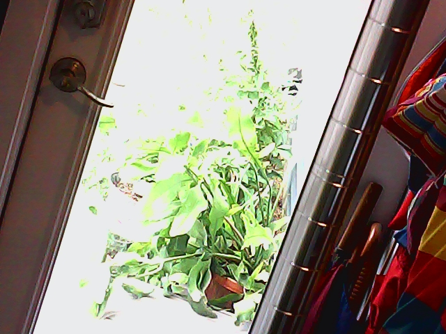

Click on a tab to display
Data entry is here
Latest picture goes here.

The MVP (Minimal Viable Product) is a low cost, hydroponic growth chamber; designed as a simplified version of the MIT OpenAg Personal Food Computer. While this is a working hydroponic environment, the focus in on collecting research data. This is an open source project based around a Raspberry Pi 'brain' and Python code, with a CouchDB repository.
This particular box you have reached is used for testing and development of the MVP system, and is running code and sensors not a part of the normal MVP build.
Documentation is on the MIT OpenAg Wiki
Discussion is on the MIT OpenAg Forum
Code is sourced on Github